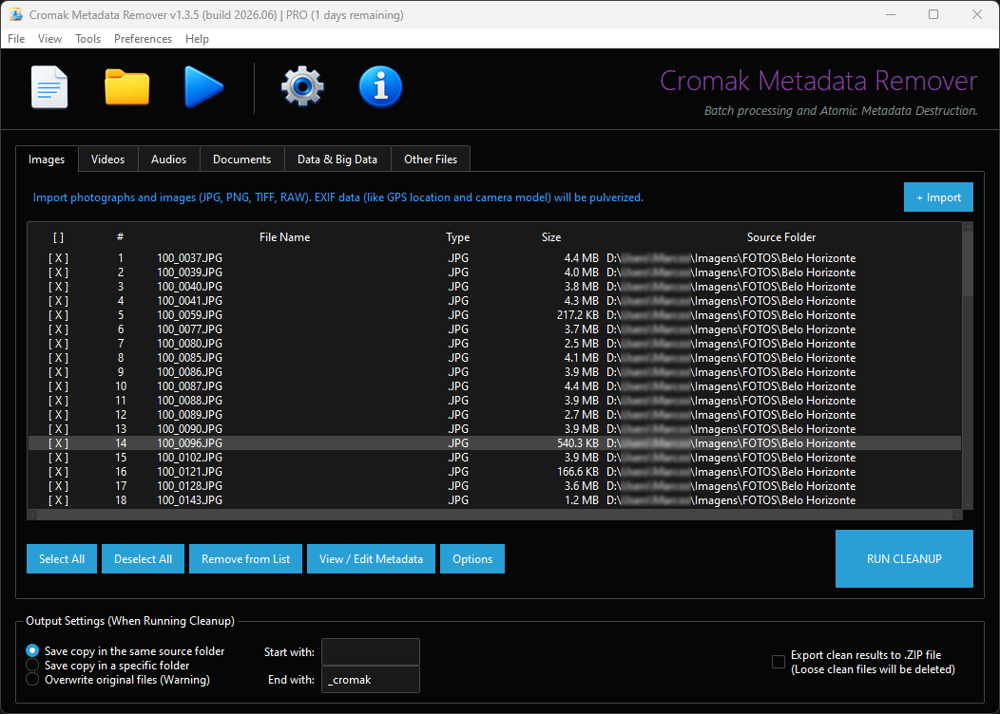
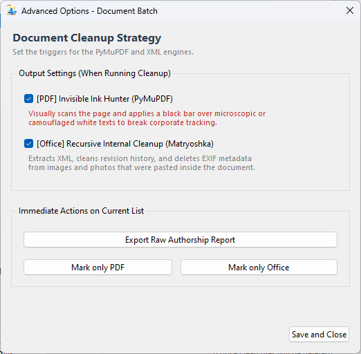
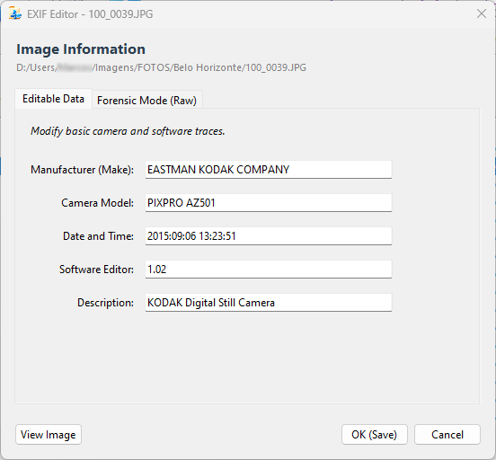
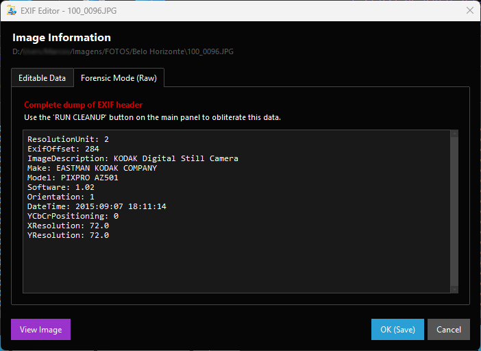
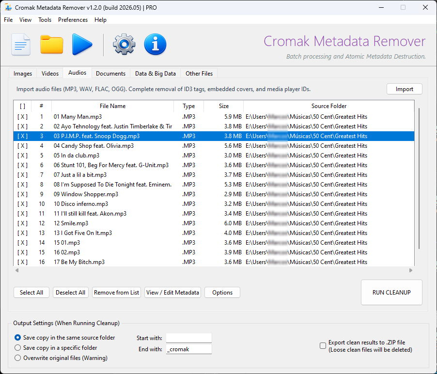
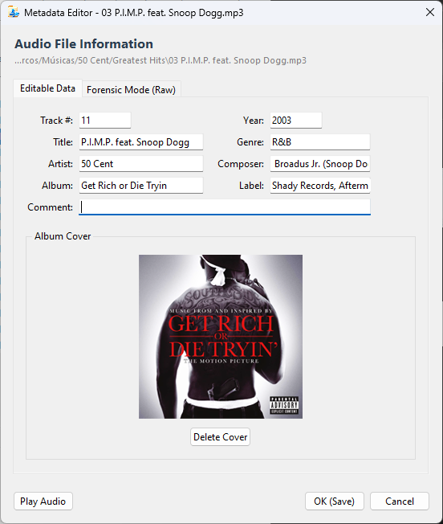
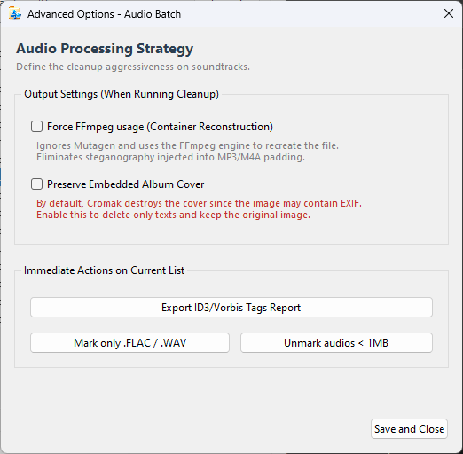
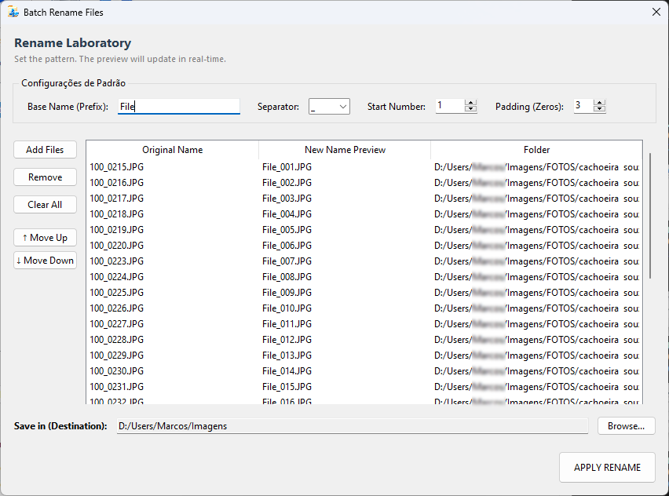
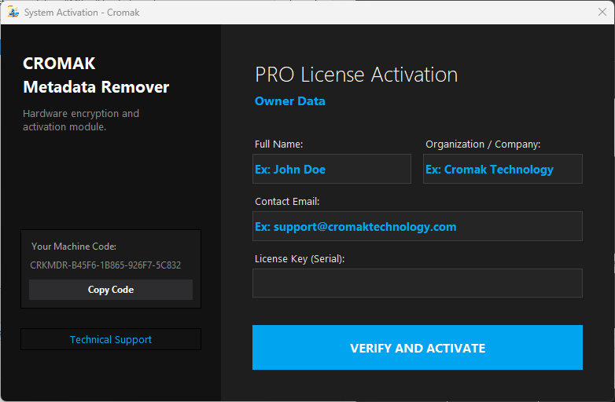

Cromak Metadata Remover
Motor Forense de Sanitização e Destruição Atômica de Dados
Versão: 1.2.0 (build 2026.05)

Segurança Avançada (Nível SO)
-
PDF - Tinta Invisível (Redaction)
Documentos PDF escondem "watermarks" brancas e fontes microscópicas para rastrear vazamentos. O motor caça textos menores que 2.0pt ou puramente brancos e aplica uma tarja preta definitiva.
-
Office Matryoshka
O sistema vasculha o interior de arquivos Word, Excel e PowerPoint (como uma boneca russa) para higienizar o GPS de fotos que foram coladas dentro do documento.
-
Mascaramento de MAC Times
O software congela as datas de Modificação, Acesso e Criação do arquivo final no exato momento da operação, ocultando o rastro temporal da limpeza.
-
Roteamento Inteligente em Lote
Importe pastas inteiras. O algoritmo distribui automaticamente Imagens, Vídeos, Áudios e Dados para suas respectivas abas de processamento com base em assinaturas de formato.


Internacionalização Nativa
Projetado para o mercado global. Com um motor de i18n em tempo real, o software adapta dinamicamente toda a sua interface, menus, logs e alertas para o idioma nativo do sistema do usuário de forma automática.
Galeria de Operação
Clique em qualquer captura de tela para expandir e inspecionar a interface do motor forense.

Edição de Imagem
Interface simplificada para alteração e verificação das informações básicas do fabricante, modelo de câmera e descrições do arquivo.

Modo Forense EXIF
Exibe o dump estrutural real do arquivo, permitindo que o operador visualize dados brutos ocultos antes da pulverização criptográfica.

Processamento em Massa
Gerencie grandes volumes de dados. Acompanhe tamanho, extensão e diretórios de origem em uma fila de alta performance.

Metadados de Áudio
Suporte completo a tags EasyID3 e MP4. Altere faixas, artistas e decida se deseja preservar ou expurgar a capa do álbum.

Ajustes de Áudio Avançados
Controle do motor FFmpeg para remoção forçada e reconstrução atômica de streams de áudio comprometidos.

Renomeador Sequencial
Ferramenta integrada para higienizar os nomes físicos dos arquivos em massa, removendo dados identificadores no próprio disco.

Ativação de Módulos PRO
Validação local de licenças premium para desbloqueio dos algoritmos militares e eliminação das travas do cofre de avaliação.
⚠️ Alerta de Destruição Física (Wiping Militar)
Se a opção Wiping Militar estiver ativada nas preferências e a saída for definida como "Sobrescrever", o arquivo antigo será completamente criptografado com bytes aleatórios antes de sua exclusão lógica. Isso torna o arquivo original permanentemente irrecuperável, impedindo a reconstituição por softwares de perícia governamental ou laboratórios de recuperação de hardware.
A criação de cópias de segurança (backups) antes da operação é de sua inteira responsabilidade.
Requisitos do Sistema
- Sistema Operacional Windows 10, Windows 11 ou superior (Apenas 64-bit)
- Processador Multi-core 1.5 GHz ou superior (Intel / AMD)
- Memória RAM 4 GB (Recomendado 8 GB para processamento em lote pesado)
- Armazenamento 200 MB de espaço livre no disco (SSD recomendado)
- Conectividade Nenhum acesso à internet necessário (Motor 100% Offline)